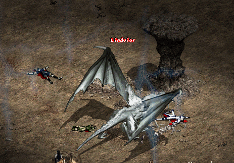
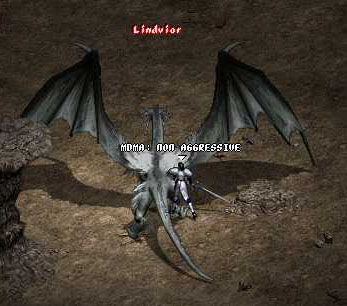

2003年2月18日
實戰風龍林德拜爾
在美國測試伺服器上很多人也看到風龍林德拜爾，牠的位置在風龍斷崖的外面，另外牠是被動的，你要先打中牠，牠才會攻擊你。
Ektay說在使用魔法防禦後風龍只能造成約50HP的傷害，而沒有魔法防禦的話，可能會一下死，風龍把他降至45級。
Axo寫道風龍的體積較其他巨龍小，風龍會使用強勁的雷電攻擊，有一種會造成約200HP傷害（藍色的毒霧），而另一種則殺死了該玩家，即是240+HP傷害（同一時間使用4下極度落雷）。風龍是被動的，除非玩家攻擊否則牠不會主動攻擊玩家，牠的巢穴是很容易進入，同時牠由空中降下的動畫非常漂亮。
Dias（45級，-51防，魔防31%）說在同伴PRiM及Leggolas的幫助下，他單對單了風龍27分鐘，他總共用了206張魔屏卷軸及254支白水，而在過程中風龍像哈維般飛在天上6次，因此最終牠並沒有被擊倒。


Copyright(C)1998-2003 Gabriel Leung. All Right Reserved.